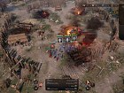
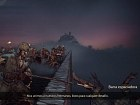

Vikingos, anglosajones, germanos y eslavos se enfrentan en Ancestors: Legacy, un videojuego de estrategia en tiempo real desarrollado por los autores del polémico Hatred. Comanda a tus tropas, saca partido de sus habilidades especiales, y derrota
a tus enemigos en las espectaculares y emocionantes batallas de este juego ambientado en la Edad Media.
Ancestors(PC)
$ 300
Desripción
Destructive Creations apuesta por un estilo de juego similar al de Company of Heroes, poniéndote a los mandos de pequeños escuadrones de soldados con sus propias habilidades. En Ancestors: Legacy también es importante sacar provecho del escenario
usando la hierba para ocultarte y así atacar por sorpresa a los rivales, o bien creando trampas con las que liquidar al ejército rival con suma efectividad. Por el camino debes gestionar los recursos en las aldeas que conquistes, construyendo
edificios para entrenar nuevas tropas. Ancestors: Legacy incluye un completo modo campaña con historias protagonizadas por las cuatro facciones que se enfrentan en este videojuego. También podéis combatir contra la IA del juego en escaramuzas, o bien
enfrentaros a otros jugadores a través del multijugador online para hasta seis personas.